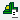
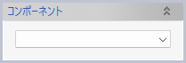
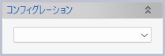

 部品コンポーネントの作成（ファイルから）
コンポーネントの配置コマンドと同様に、指定した3Dモデルドキュメントファイルをインポートして、ドキュメントに含まれる要素をまとめてひとつの部品コンポーネントという要素にします。部品コンポーネントは、ひとつのかたまりとして、マニピュレーターを使って移動したり、拘束を付加したりして位置決めができます。
操作方法
部品コンポーネントとしてひとまとめにしたい要素を含む3Dモデルドキュメントファイルを指定します。ドキュメントにコンポーネント定義が含まれていれば、いずれかのコンポーネント定義を選択して、その構成要素だけを利用することができます。またはドキュメント内の表示要素すべてを利用します。OKをクリックすると部品コンポーネントが作成されます。
パラメーター
- コンポーネント定義ファイル
部品コンポーネントにしたい要素が含まれる3Dモデルドキュメントファイルを指定します。コンポーネントの配置コマンドと同じように、コンポーネント管理ウィンドウからもファイルを指定できます。
- コンポーネント

部品コンポーネントに含める対象を選択します。
- リストの先頭には「モデル名（ファイル名）」という項目が表示されます。これを選択すると、指定したファイル内のソリッド、シート、カーブ、点をインポートして、それらを構成部品とする部品コンポーネントを作成します。
- 続けてファイル内に含まれるコンポーネント定義を列挙します（あれば）。定義を選択すると、その定義に含まれる要素をインポートして、それらを構成部品とする部品コンポーネントを作成します。
- コンフィグレーション

「コンポーネント」欄で選択した定義にコンフィグレーションが含まれていれば、それが表示されます。
- 同名変数のマージ

インポートする要素がパラメーターに変数を利用していた場合の取り扱い方法を選択します。詳細はインポートコマンドの解説を参照してください。